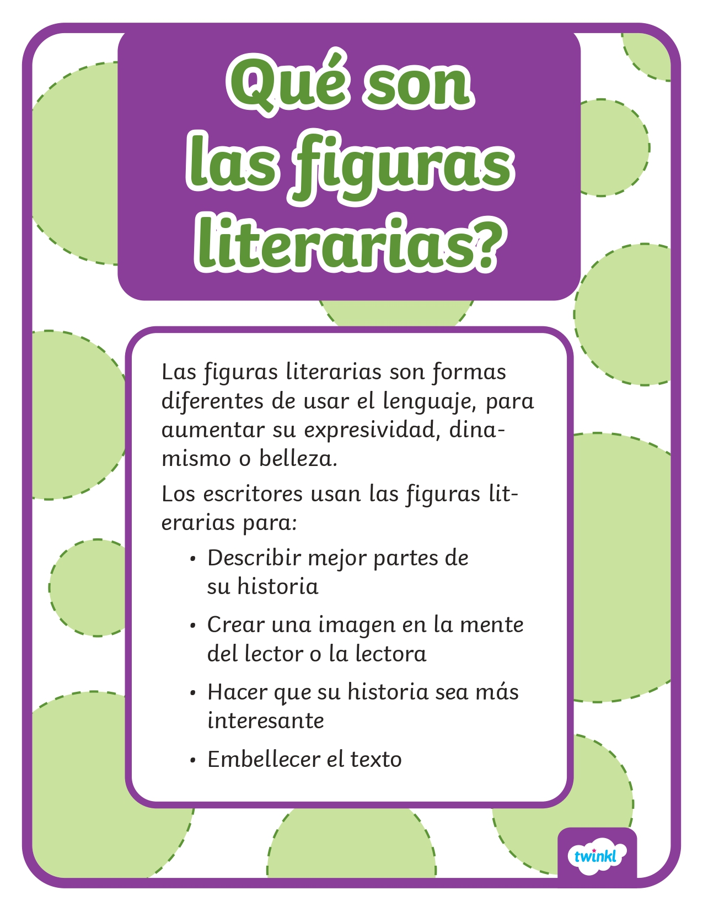
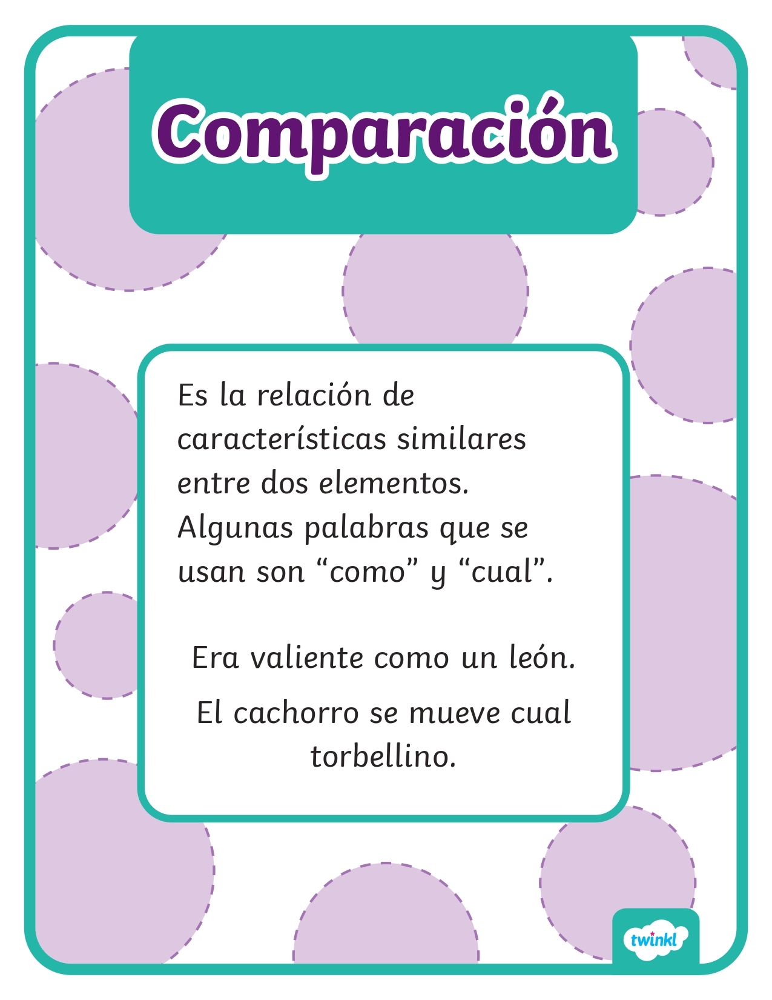
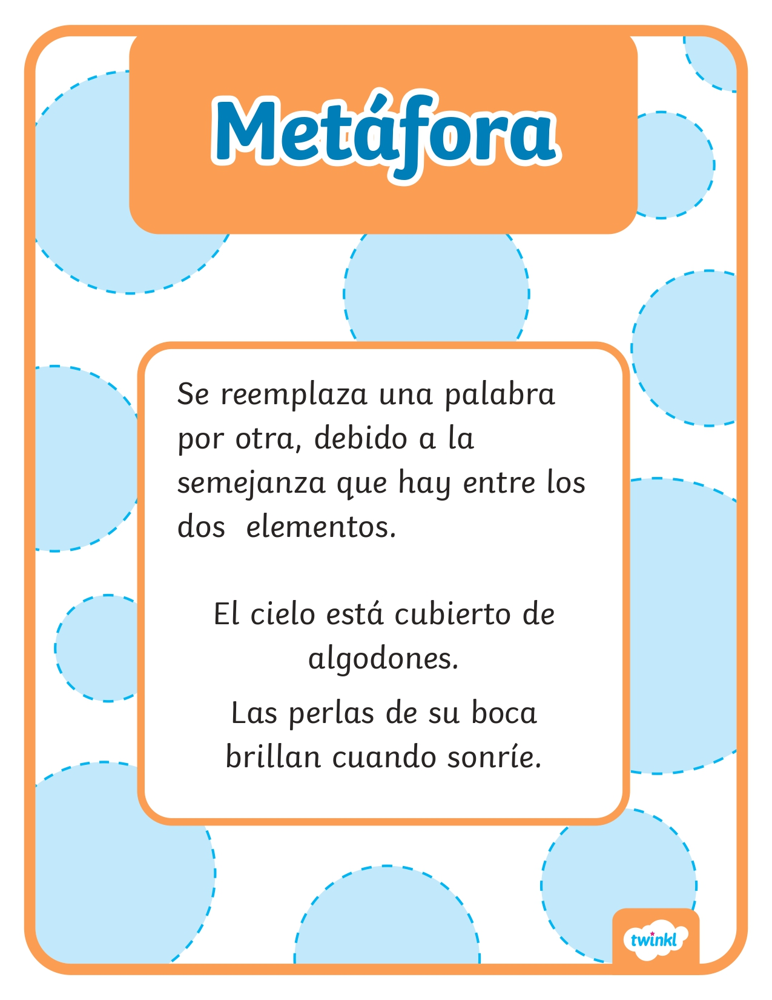
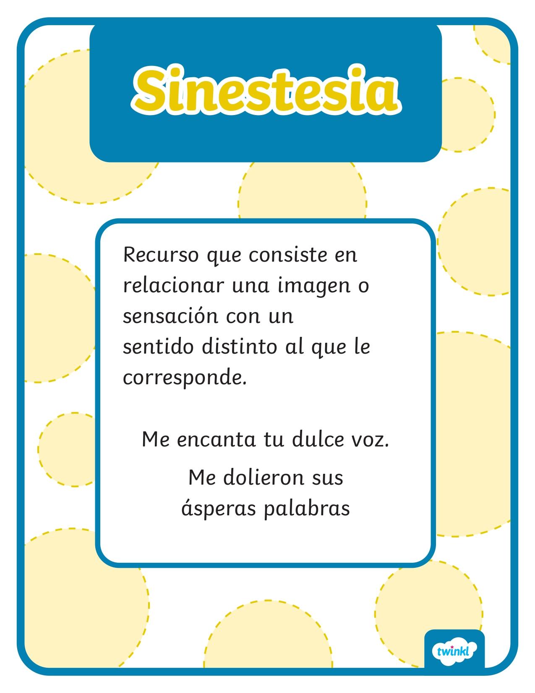
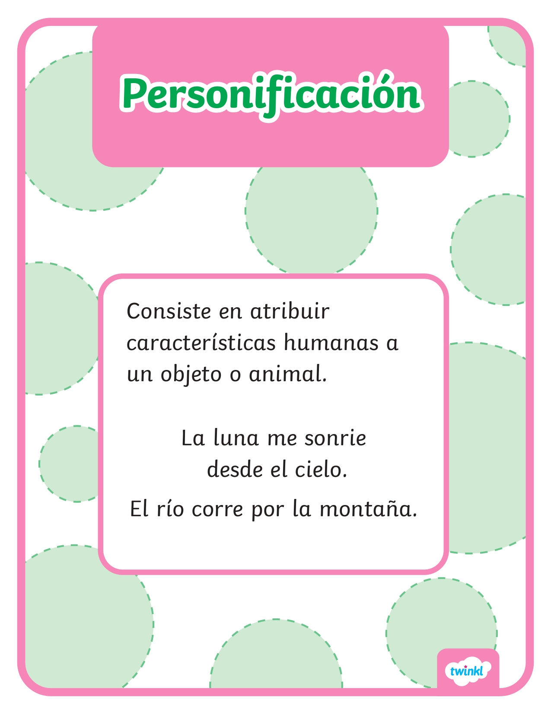
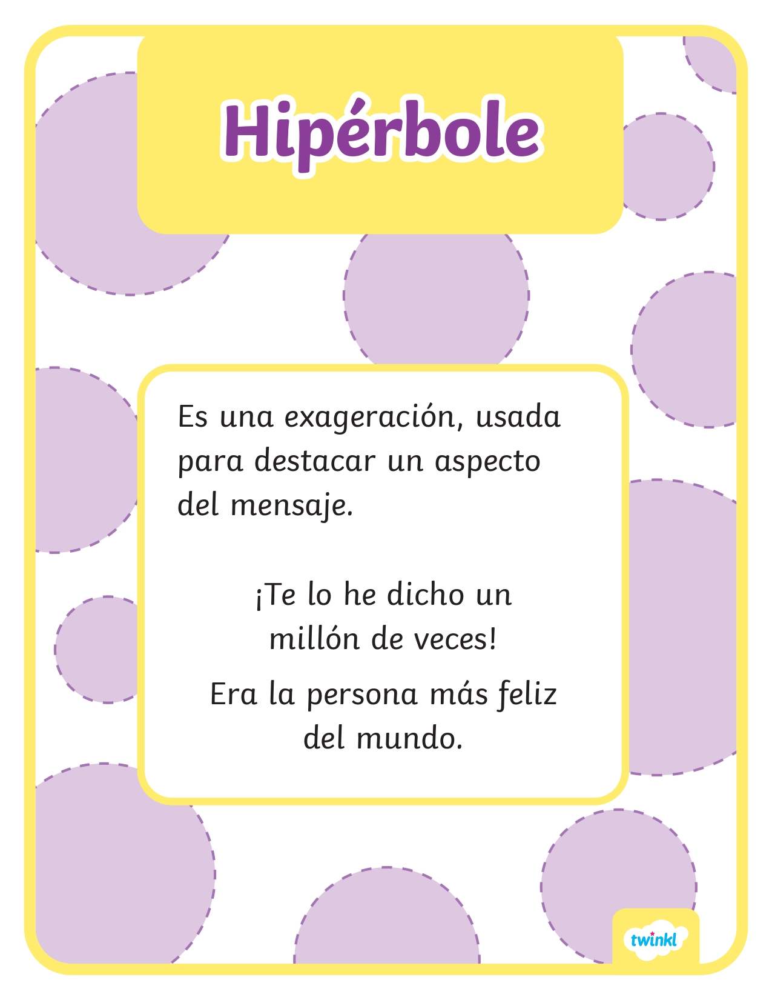

Objetivo general
Reconocer, comprender y aplicar figuras literarias como recursos expresivos que enriquecen la interpretación y producción de textos.
La Fábrica de Figuras Literarias es un recurso digital inclusivo que facilita el aprendizaje mediante contenidos visuales, dinámicas interactivas y evaluación formativa, apoyando tanto a estudiantes con diversas necesidades de aprendizaje como a docentes en sus estrategias pedagógicas.






Reconocer, comprender y aplicar figuras literarias como recursos expresivos que enriquecen la interpretación y producción de textos.
Identificar el significado y función de diferentes figuras literarias dentro de textos poéticos y narrativos.
Utilizar figuras literarias en ejemplos propios para fortalecer la creatividad y la expresión escrita.
Desarrollar actividades interactivas que favorezcan la motivación, la inclusión y el aprendizaje significativo.
Relaciona dos elementos sin usar conectores comparativos. Permite expresar ideas de manera más poética y profunda.
Compara dos elementos utilizando palabras como “como”, “parece” o “semejante a”.
Atribuye características humanas a animales, objetos o ideas.
Exagera una idea o situación para generar énfasis, emoción o impacto expresivo.
Combina sensaciones de distintos sentidos, como colores, sonidos, sabores o texturas.
Establece semejanzas entre elementos para facilitar la comprensión de una imagen literaria.
Ingresa a la actividad interactiva para reforzar los conceptos aprendidos sobre figuras literarias. Puedes acceder desde el botón o escaneando el código QR.
Escanea el código QR para ingresar a la actividad.
Recursos gráficos que facilitan la comprensión de los conceptos.
Materiales educativos para consultar, imprimir o compartir.
Dinámicas digitales que fortalecen la participación.
Contenido pensado para diferentes ritmos y formas de aprendizaje.
Finaliza el recorrido realizando una actividad de evaluación para comprobar tu comprensión de las figuras literarias.
Realizar evaluación